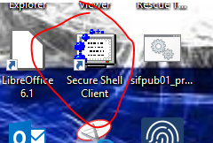
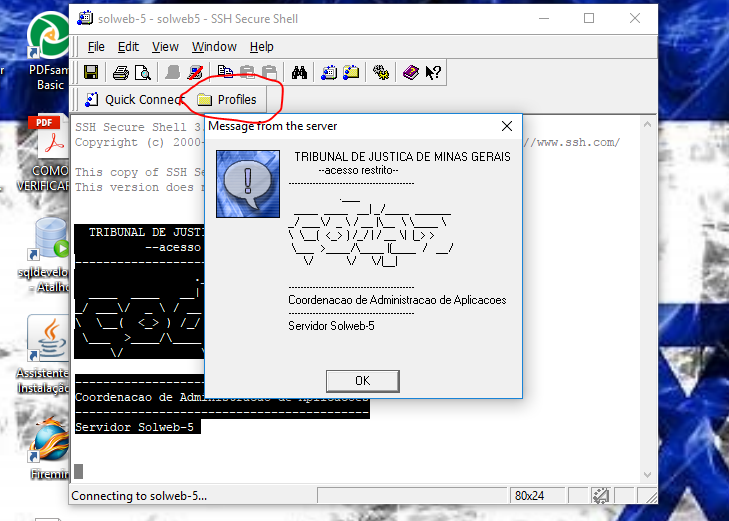
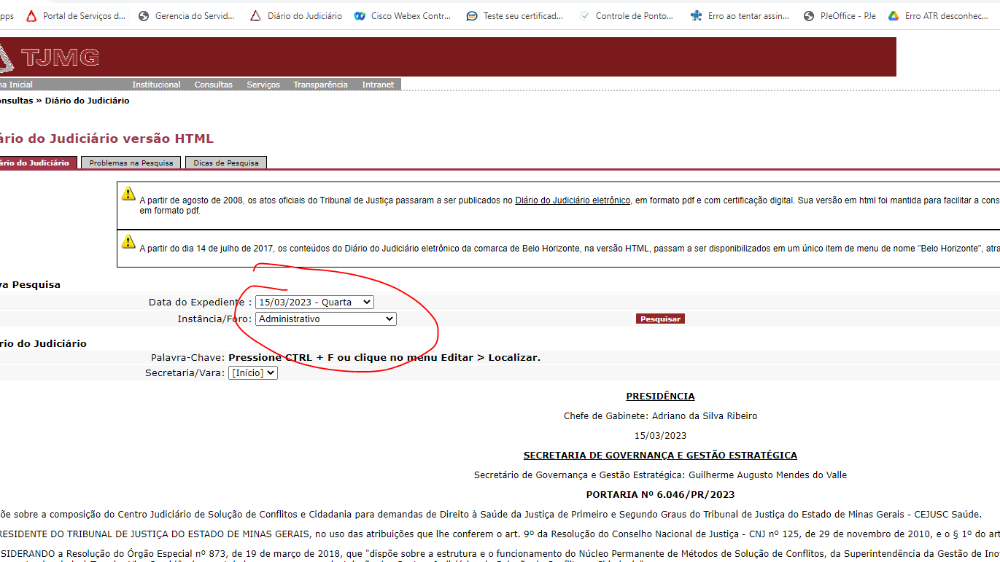

Manual de Publicação (Administrativo)
Passo 1
- Abra o e-mail da "OPERAÇÃO" e localize a mensagem do dia anterior referente ao expediente.
- Clique na seta do último anexo e selecione "Salvar todos os anexos".
- Salve os arquivos em uma nova pasta com a data do expediente, seguindo o caminho:
Z:\Arquivos PUBLICACOES\Arquivos administrativos\2023\5. Maio\03.05.23
OBSERVAÇÃO: Se o e-mail "Publicação DJe" não for encontrado, contate Paula ou Michele da presidência.
Passo 2
- Navegue até a pasta do dia e abra o arquivo Word (.docx) com o LibreOffice.
- No LibreOffice, vá em Arquivo > Salvar como...
- Em "Tipo", selecione Texto em Formato Rich Text (.rtf).
- Nomeie o arquivo como
diamestjmg01(ex: para 15 de março, ficaria 1503tjmg01). Salve e feche o documento.
Passo 3
- Abra o FileZilla e conecte-se ao site TJ_Arquivos RTF.
- Navegue até o diretório remoto:
/web1/www/arquivos/juridico/sf/diarioe entre na pastartf. - Transfira o arquivo
.rtfque você acabou de salvar para esta pasta.
Passo 4
- Acesse o servidor
SOLWEB-5(via PuTTY ou outro cliente SSH).

- Clique em "Profiles" e depois em "SOLWEB-5" para conectar. 
- Quando solicitado, utilize a senha:
imprensa. - Cole o primeiro comando para navegar até a pasta e pressione Enter:
- Cole o segundo comando para executar a conversão e pressione Enter:
- AGUARDE! Espere até que o cursor com o cifrão (
$) apareça novamente no final.
cd /home/publica/rotina
./rtf2html.pl –tPasso 5
- No FileZilla, pressione F5 para atualizar a pasta
rtf. O arquivo que você enviou deve ter desaparecido. - Acesse o site do DJe (Diário Judiciário Eletrônico) e verifique se a publicação foi criada corretamente. 
- No servidor, procure pelo arquivo gerado
diamestjmg01.txte copie-o para a pasta do dia correspondente.